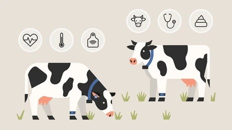

Featured Segments

Smart Irrigation System
An IoT-enabled system that optimizes water usage using real-time soil and weather data.
Learn More
AI Crop Disease Detection
Using deep learning models to identify crop diseases from leaf images for early intervention.
Learn More
Soil Health Monitoring
A data platform integrating IoT sensors and cloud analytics for continuous soil quality tracking.
Learn More